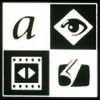
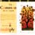

| BACK | ||
 |
 |
Introducing the "Means of Expression" Background Because of the success of its graphics based software, Adobe Systems was thought of as a niche market company--and its stock price rose and fell based upon that misperception. With the introduction of Acrobat, a revolutionary new software that would appeal to a mass market, it became even more important that the real story of Adobe be communicated and understood. Positioning and Execution Our strategy was to reposition Adobe from a software company to a company committed to "enabling enhanced communications." Guided by our positioning line "Adobe - The Means of Expression," we showed how Adobe could add a great deal of functionality to computer systems by allowing the easy transfer of type, images, and video -- not only between different computers, but across entirely different computer systems. Report spreads act like print ads, providing specific emotional positioning for each product and technology within its respective area. Custom "product" icons continually remind the reader of the breadth of Adobe's offerings.
Results
|